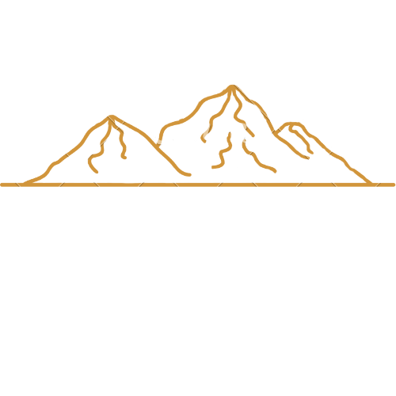

¿Porqué de las Sierras?
Nuestros primeros pasos por la vida culinaria del chipá, empezaron justamente en las queridas Sierras de Córdoba, Argentina.
Allí, el viento y la humedad, se fusionan junto con los aromas del chipá recién hecho, dando así ese gustito particular que tienen nuestros productos.
A medida que fuimos creciendo, junto a nuestra cantidad de clientes, decidimos abrir nuevos locales para que la gente de la ciudad también pueda saborear los gustitos de las Sierras.
Nuestro Chipá
El chipá que preparamos tiene como base los condimentos esenciales y justos, provenientes del país vecino, Paraguay, de donde es originario éste producto.
El queso holanda junto con la fécula de maiz, la pimienta y varios condimentos "secretitos", hacen de nuestros chipás únicos en el sabor y en el gusto. Contamos además con varios sabores éxoticos y variados, para que pruebes de cualquier tipo y forma.